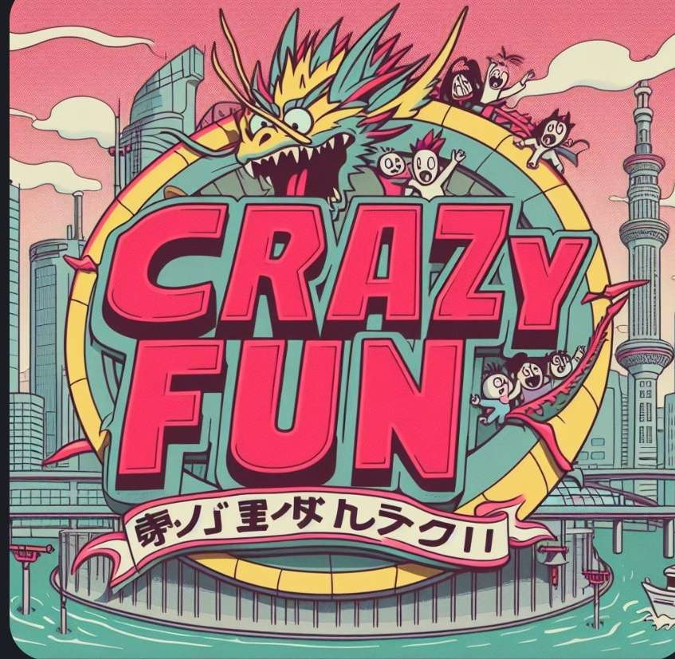

Home
Download
Video
Events
Les textures
------------
Les prérequis
1er prérequis un bon logiciel de dessin(je vous conseille paint.net)
Ce qu'il ne faut pas faire
il faut pas que tu fasse des dessins de plus ni de moins que 16px